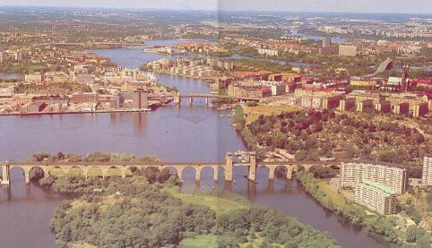
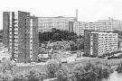
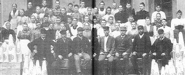

Södermalm i tid och rum. Stockholm
|
|
 
|
 |
|
En del bilder är hämtade från CD-skivan Söder i våra hjärtan Malmarna, de stora landområdena runt omkring den lilla tätbebyggda stadsholmnen, var länge obebyggda. De var ödemarker där "bysens fä" kunde finna ett magert bete och varifrån fientliga belägrare kunde beskjuta staden som låg nedanför, omringad av bergen. Just belägringsriskerna medförde att det tidvis var förbjudet att bygga på malmarna och att de hus som fanns där revs i krigstid. Samtidigt behövdes alltmer utrymme för olika verksamheter som var besvärliga eller farliga att ha inne i staden. Illaluktande tranbodar och garverier, eldfarliga krukmakerier, utrymmeskrävande repslagerier, åkerier och tegelbruk hörde till det som man redan under 1300- och 1400-talen gång på gång försökte flytta ut. När risken för nya belägringar inte längre kändes lika stor började bebyggelsen i utkanterna att växa. År 1570 utfärdades ett privilegiebrev som har kallats malmarnas "myndighetsförklaring" - i det fastslås att invånarna på malmarna "här efter vare med Stockholms stads inbyggare inräknade". Under 1620-talet påbörjades en stor stadsplanereglering av Stockholm, det var då det ännu i stort sett bevarade "rutmönstret" av gator skapades. Regleringsarbetet nådde fram till Södermalm på 1640-talet och därefter växte befolkningen i stadsdelen snabbt.
Och enligt stadsingenjören Johan Olofsson Holm ska det sista kartbladet i hans stora tomtbok över västra Södermalm 1679 heta "Tanto" - det saknas i tomtboken och har förmodligen heller aldrig utförts. Vi får nöja oss med att Holm på ett annat blad ändå markerar "gattan som löper till Tanto, j Horns wijken". Gatan som löper till Tanto var från början en så kallad vinterväg. Stadens gator och vägar var långt in på 1800-talet ofta närmast ofarbara, de var smala, backiga och dåligt belagda - och vägarna som ledde till och från staden var inte bättre. Därför genade resenärer - och främst bönderna som skulle till stan för att sälja sina produkter - gärna vintertid över isarna. Vintervägarna ledde till platser där det var lätt att ta sig över från land till is och från is till land. Sedan man 1622 infört den s. k. lilla tullen, som krävde sin tribut av "alla ätliga, slitliga och förnötliga varor" som infördes i staden, behövdes tullstationer också vid vintervägarna. De två första tullarna på Södermalm (förutom sjötullen på Långholmen) var Grinds tull (som senare blev Skanstull) och vintertullen vid Åkermyran. Något senare tillkom tullen intill Horns tegelbruk (Hornstull), Danviks tull och vintertullen intill Hammarby sjö. Var tullen vid Åkermyran låg har närmare förklarats av Johan Elers: "på södra sidan av Tantogatan (nuvarande Fatbursgatan), väster ut ifrån Timmermansgatan, där en bom länge varit bibehållen, som likväl sedan blivit flyttad längre i väster."
Det är väl troligt att vintervägen mot Årstaviken givit upphov till den första bebyggelsen i det område som snart kom att kallas Tanto. En av de första tomtägarna som omtalas vid början av 1660-talet var Hans Tanto, ibland kallad Danto eller Tantow. Vem var Hans Tanto? Ja, det går knappast att ge ett säkert eller utförligt svar. Första gången namnet nämns i samband med Tantoområdet torde vara 1663 då borgmästaren Erik Rosenholm fått sig tillmätt som fiskedike ett område vid Hornsviken "uti Grinds hage vid Tantos tomt". Stockholmsforskaren Gunnar Bolin anser att namnet Tanto ursprungligen lydde Tantow och att det härleder sig från ett stadsnamn, den lilla vorpommerska staden Tantow sydväst om Stettin. I Stockholms Storkyrkas dopbok förekommer (bland faddrar) en Martin Tantow 1613. Vid mantalsskrivningen 1676 upptas en Hans Danto och en Hans Tanto på västra Södermalm. Danto står som boende i kvarteret Höga loftet på Mariaberget medan Tanto nämns som arrendator i kvarteret Mullvaden. Det sistnämnda kvarterets omfattning är svår att bedöma, kanske Tantoområdet vid denna tid ännu ingick i ett större odelat kvarter med det namnet. Danto och Tanto kan möjligen vara samma person - men de redovisas som två. I de boutredningar som finns bevarade från mitten av 1600-talet till mitten av 1700-talet förekommer namnet Tanto några gånger (någon Danto eller Tantow återfinns däremot inte). Barbro Florentina Tanto avlider 13.1.1726 och i boutredningen omnämns Hans Tanto, svärdfejare, som änkling. Svärdfejaren Hans dör 29.2.1732, i boutredningen nämns hans tidigare avlidna syskon: regementsfältskären Johan Tanto och systern Magdalena, gift Ahlfeldt. Om svärdfejaren är densamme som den Hans Tanto som på 1660-talet ägde en tomt vid Hornsviken borde han vid sin död nästan sjuttio år senare väl ha varit minst i nittioårsåldern, en oerhört hög ålder på den tiden. Kanske svärdfejaren var son till en tidigare Hans? Därom vet vi ingenting. Men Tanto blev namnet. På området, på Tantovägen. Tantogatan, Tantosjön (namnet ibland använt för en del av Årstaviken), på Tantolunden och på brännvinsbränneriet och sockerfabriken.
Magnus Bröms (1684-1757) var rådman och politiborgmästare i Stockholm. Molitor var en känd apotekarsläkt där farfar Christian invandrade från Tyskland vid mitten av 1600-talet och sedan genom giftermål med en apotekaränka blev ägare av apoteket Engelen inne i staden. Christians son och sonson, båda med förnamnet Christian, drev sedan apoteket vidare. Familjen var också känd för de odlingar av medicinalväxter som man hade, förmodligen var det dessa som låg vid Tanto (en trädgård är markerad på platsen). År 1733 var det den tredje Christian som hade ledningen, han "säges hava varit en ganska kunnig man och ägt en vacker boksamling, vilken han tillika med några vänner av medici flitigt nyttjade". Han uppges ha varit endast fjorton år då han övertog apoteket 1705, han dog 1736.
Christer Robsahm (1698-1769) var ämbetsman och samtidigt företagare. I Maria församling hade han gjort aktiva insatser för att skapa ett församlingens eget fattighus och blev också en av föreståndarna när detta tillkom. Robsahm var även känd som Emanuel Swedenborgs gode vän och som en av de främsta tillskyndarna av Maria kyrkas återuppbyggande efter den stora branden 1759. Tillsammans med några medintressenter - brukspatronen och grosshandlaren Olof Sjöberg och notarien Anders Berch - köpte Robsahm på 1730-talet Zinkensdamm och därefter det område som ägts av Bröms. Sjöberg inlöste senare de övriga två delägarnas andelar i Zinkens och blev ensam ägare av malmgården som tidigare tillhört bl a reduktionspolitikens främste ledare Claes Fleming (1649-1685, sonson till amiralen och riksrådet med samma namn) och klädesleverantören till Kronan, Frantz Zinck (namngivare till sjön och malmgården, död 1690). Ritningar till sockerbruket tillkom 1758, och samma år började man arbeta i liten skala med åtta anställda. Försöket blev emellertid ganska kortvarigt, driften fortsatte fram till 1769 då Robsahm avled. Hans ekonomiska ställning vid den tiden uppges som "katastrofal".
Om dryckenskapens vådor handlar i hög grad det mest kända skaldestycket som berättar om Tantotrakten: Carl Michael Bellmans Fredmans epistel N:o 53, "Angående Slagsmålet nedanför Danto-Bommen hos T. en höstnatt." Episteln är, anser Bellmansforskaren Nils Afzelius, "det dåliga ölsinnets dikt om den tunga och dystra nordiska fyllan, som kräver utlösning i bråk, knivdragning och smockor. Själva skådeplatsen är ovänlig. Krogen Rosenlund låg nära ett bergigt, skräpigt och ganska ruskigt område i en utkant av Söder. Slagskämparna är otrevliga och argsinta figurer. Stämningen är dyster och ogemytlig." Men dikten är också en samtidigt kraftfull och detaljrik rundmålning av en tidigare mycket litet skildrad trakt.
Kring denna trakten "Krögarn är full, och full är krogen", en gesäll har glas i knogen, en båtsman visar kniven, flickorna gungar repgunga högt uppe i en gran och "Fröjas gummor" lyfter på kjolarna och visar sina vita ben. Utanför krogen står rackaren, som är häst- och hundslaktare och också bödelns hantlangare, och hutar åt hundarna med piskan. Borta i Rackarbergen (där Södersjukhuset en gång ska byggas) syns hans stuga, "grå, nederfallen och ful, och en kråka på ett hjul".
Man är osäker på när dikten tillkom, Afzelius och Olof Byström menar att den kan dateras tidigast 1770 och senast 1780, Afzelius anser att den helst bör förläggas i närheten av den förra tidpunkten. I så fall tillkom den före bränneriets start vid Tanto (och bränneriet nämns ej heller i episteln). Den T. som förekommer i epistelns ingress torde ha varit trädgårdsmästaren Eric Thurin som ägde Rosenlund ined trädgård och krog 1759-1781. Om den produkt som framställdes vid det nya bränneriet yttrar sig Bellman åtminstone en gång, då ordensklockaren i Bacchi orden, D. J. Trundman (förekommande i verkligheten, till vardags klockare vid Spinnhuset), får utbrista: "Hvad kostlig lukt och smak - sublima Danto-sup!" På andra sidan Årstaviken och mitt emot Tanto fanns en annan i hög grad skrivkunnig och skarpsynt iakttagare av livet i utkanten. Det var Märtha Helena Reenstierna, gift von Schnell, Årstadagbokens författare. På allvar påbörjar hon sin dagbok först 1793, bara två år före Bellmans död. Årstafrun räknade Bellman bland sina vänner. Han hade flera gånger deltagit i slåtteröl och andra fester på Årsta och då ofta tillägnat värdinnan någon tillfällighetsdikt. Bland de två skribenternas gemensamma bekanta fanns en herre vid Tantobränneriet, kamreren Jakob Möller som bodde vid bränneriet men en tid också hade Årsta holmar som användes som familjen Möllers sommarnöje. Hos Möller var Bellman på sommarbesök 1785 och Fredmans sång No 9, "Måltids-Sång", skrevs efter en tydligen präktig middag där. Sången nämns först som "Hos Cam: M-r: på holmarne A:o 1785".
Klang! en klunk uppå Skinkan innan Steken blir skärd. "Jacobsdag", 25 juli, 1793 är det Årstafruns man, ryttmästare von Schnell, som är bjuden till "middags och afton calas" då Möllers namnsdag firas på Årsta holmar. Ryttmästarfruns kommentarer till kalaset (som hon dock inte var bjuden till) är något mindre översvallande än Bellmans: "därest var många Herrar, hvilka med drickande och svärjande firade fästen tills 1/2 12 om natten med supiga hufvuden, då efven min man likalydande hemkom." Domprosten och nykterhetsagitatorn Per Wieselgren har talat om "den tid, då brännvinsinspektorerna höllo stat med silverfat"." Även om Möller inte var inspektor utan bara kamrer så tycks också han ha kunnat "hålla stat". Något livligare umgänge förekom annars väl knappast mellan herrskapet på Årsta och de ledande herrarna på kronobränneriet. Några av herrarna möter Årstafrun på middagar och i vardagsförrättningar och noterar då deras namn. Underbrännmästaren på Tanto, Jonas Pihlberg, kommer tilexempel till Årsta för att mäta halten på det brännvin son tillverkas vid Årstas bränneri och bokhållaren Henrik Bille ska så småningom arrendera Årstas bränneri och flera torp. Kronobokhållaren Anders Löfgren bjuds vid ett tillfälle på kråkstek på Årsta, senare (när han flyttat till Ladugårdslands bränneri) berättar Årstafrun att Löfgrens hustru övergivit honom och att han med anledning därav begått självmord. När det gäller tullbetjäningen vid Tanto-bommen visar det sig att Årstafrun ogillar funktionärerna dlär nästan lika starkt som slagskämparna på krogen Rosenlund gör det. I mars 1802 kräver "Besökaren" (tullmannen) drickspengar därför att Årstaherrskapet och deras drängar "ibland något sent besvärade med bommens öppnande". I slutet av mars samma år måste herrskapet "vid Tanto öfra bom --- i 3/4 timma vänta och eländigt ropa att slippa igenom, hvilket ändock icke skett, därest ej ödet så fogat, att 6 Personer från Tanto kommit, hvilka på det sätt hjelpte oss, att 2ne Herrar gick in och släpade ut tullsnoken, som var full och otidig. Vid nedra bommen var ej stort bättre och således kommo vi ej hem förrän klockan 12 om natten." I samband med detta intermezzo skriver Årstafrun till kamrer Johan Enegren vid bränneriet för att be honom vittna mot tullmannen. En livfull skildring i Årstadagboken av en brand vid ett bränneri 1827 gäller inte Tanto (som då hade upphört) utan fruns egna Årsta bränneri. När kronobränneriets verksamhet upphörde 1824 fanns tydligen inga fasta planer för Tantos framtid och hur lokalerna där skulle användas. I mars 1827 beslöts att ett provisoriskt sjukhus skulle inrättas i bränneriet , möjligen är det detta som ibland har nämnts som ett "dårhus".
Würtenbergs klädesfabrik upphörde 1847 och samma år och året därpå utsåldes lagret av tyger. Fabrikslokalerna såldes 1847 till två bröder Wollgast, söner till en tidigare sockerbruksarbetare som startat ett eget företag vid Ålandsgränd (nuvarande Mästersamuelsgatan öster om Regeringsgatan) på Norrmalm. Bröderna drev sockerbruket vid Tanto fram till 1850 då fabriken härjades av brand . Därefter återköpte Marks von Würtenberg Tanto och ägde området fram till 1855. Även Würtenberg hade drabbats av en brand under den period som han drev sin klädesfabrik. Årstafrun rapporterar 1834 att elden "gjort betydlig skada" i klädesfabriken och att hennes dräng Löfgren varit med om släckningen. 1847 köper advokatfiskalen G. Sandeberg av Kronan ett område vid Tanto vars tidigare ägare uppges ha varit änkan Brita Carre född Molitor. Änkan Brita var förmodligen den sista tomtägaren vid Tanto som tillhörde den gamla apotekarsläkten Molitor som sedan början av 1700-talet ägt mark där. Men nu samlas alltmer av Tanto under en ny ägare som lång tid framåt ska sätta sin prägel på området. Sandeberg säljer i juni 1855 den obebyggda tomten han köpt till Tanto Nya Sockerbruks A. B. När Marks von Würtenberg bara några dagar senare säljer f.d. bränneriet till samma ägare har det nya företagets namn ändrats till Tanto Sockerbruks A. B. Nu är det dags att dra upp ridån för den effektiva nutiden - och framtidens industrialiserade huvudstad. Förr drömde man om lantligt liv och beundrade herresätenas och palatsens "ballustrerade taklister eller göthiska fönster och torn". Nu måste man lära sig uppskatta "dessa industriens nakna murar, som tala till oss om idoghet och flit, istället för om veklighet och flärd. Den svarta stenkolsröken, som ur en sådan der jätteskorsten hvirflar upp mot skyn, har mången gång tillfredsställt oss vida mer än dessa stolta torn och gyldene kupoler, som endast synas vara till för att gagnlöst prunka i solen." Det är en journalist från Illustrerad Tidning som i november 1857 så entusiastiskt beskriver den nya fabriksanläggningen som då står färdig vid Tanto. Ritningarna hade utförts av J. F. Åbom och byggmästaren Axel Alm svarat för uppförandet. Fabriken, "den i sitt slag största uti Sverige och en af de största och vackraste i Europa, är belägen på Stockholms södra periferi vid Årstaviken, i hvars klara våg den speglar sina resliga murar och sin jätteskorsten." Vad det arkitektoniska beträffar "så röjer den (byggnaden) lika mycket smak som soliditet, och anblicken af det hela från sjösidan är särdeles storartad och imponerande". Reportern upplyser om att "i dess inre arbetar en ångmaschin af 25 hästkrafter jemte en arbetspersonal af öfver 200 personer." Bolaget ägs av "fyra företagsamma sockerbrukspatroner och kapitalister" och verket har sina över- och undermästare - "af hvilka den förre åtnjuter en årlig lön af 4500 R:dr riksmynt, utom en beqvämlig våning med ved och ljus efter behof och så mycket socker till husbehof som honom behagar. Mången konungens troman skulle slicka sig om mun åt så fördelaktiga och ljufva vilkor".
Loheska bruket förstördes vid den stora Mariabranden 1759 men återuppbyggdes. Under 1700-talet uppstod flera mindre bruk på västra Södermalm, bland dem det tidigare nämnda Robsahms bruk vid Tanto. Men alla de stockholmska företagen var som sagts små, särskilt i förhållande till det stora Carnegieska bruket i Göteborg. 1850 upphävdes importförbudet på raffinerat socker och sänktes råsockertullen och samtidigt inledde Göteborgs-bruket ett hårt priskrig som skakade sockerbruksägarna i Stockholm.
Just när Tantobruket stod klart var det emellertid slut på den lysande men korta högkonjunkturen, sockerpriserna sjönk. Då Freundt lämnade företaget efterträddes han av den fjärde av grundarna: Carl A. H. Schwieler (1822-1884), som tidigare haft ett bruk vid Malmskillnadsgatan. Schwieler lyckades rida ut stormen. Han flyttade till Tanto och bosatte sig där 1860 och kvarstod som ledare för företaget fram till sin död.
Tanto sockerbruk beskrivs som en modern anläggning där man tillvaratagit alla hjälpmedel som behövs för en så viktig fabrikation. Det finns en bekväm hamn med långa bryggor, rymliga öppna platser mellan husen, små järnvägar såväl utanför som inne i brukslokalen osv. "Hvarjemte allt här ser så snygt och ansadt ut, att det ej kan undgå att på den besökande göra ett mycket godt intryck." Så långt är de två texterna ganska likalydande. Men därefter skiljs de åt. I version I förklaras att "det förunnas just icke alla att här få inträda i det allra heligaste", det kan vara nog så besvärligt och tidsödande. Väl inne i bruket kan man råka ut för att bli misstänkt "för att vilja, som man säger, 'stjäla konsten' ifrån dem, som här utöfva den."
Den andra versionen (II) är betydligt längre och utan tvekan också betydligt mer initierad. Här har vandraren fått mera ingående informationer om tillverkningsprocessen och kan beskriva den för läsaren. Han beskådar först den s.k. sockerbacken vid fabriksingången med dess ofantliga högar av råsocker (det gäller vid denna tid uteslutande rörsocker). Han ser också de åtta klarpannorna som tar emot råsockret för en första reningsprocess som består i att sockret upplöses i vatten, blandas med oxblod och kokas. Vid kokningen omsluts sockrets orenlighet "af blodets koagulerande albumin" och drivs då upp till ytan. Efter kokningen förs massan med ångtryck genom rörledningar upp till femte våningen till det s. k. filtertornet och in i "Dumontska klarskåp" där orenligheten stannar kvar och varifrån det rena sockret förs till apparater där lösningen renas på nytt och avfärgas innan den går till nya kokapparater. Efter prov förs sockret sedan till "fyllhuset" där det fylls på formar (40 000 finns) till toppsocker. Formarna hissas till vindarna där de under 4-5 dygn befrias från kvarvarande sirap och förs sedan vidare till sugapparater där den sista sirapen dras ut med sugpump och topparna stjälps ur formarna och torkas i torkrummen under ytterligare fem dygn. Därefter sveps topparna i pappershöljen och är klara att sända ut i marknaden.
  Anställda vid Tanto sockerbruk. Foto från 1890-talet. Anställda vid Tanto sockerbruk. Foto från 1890-talet.
Annat socker blir kandi-, kak-, kross- och farinsocker i olika färger, även denna procedur beskrivs. Men i denna skildring (II) upplevs inget "stort obehag" och berättas ingenting om socker som trampas under fötterna eller om vad de arma flugorna kan ha att utstå. I båda versionerna skildras sedan de drivkrafter som håller maskinerna i rörelse: sex ångpannor om 225 hästkrafter (fem sådana enligt version I), en ångmaskin om 20 hästkrafter och fyra av tillsamnnans 25 hästars kraft. "Förutom ångan, hvilken användes vid all kokning inorm bruket, arbeta här omkring 150 par flinka menniskoarmar, och 3 mästare och förmän ordna eller tillse arbetets gång" (I, II). Om resultatet av arbetet ges dessa uppgifter: Version I: 8 062 420 skålpund socker och sirap till ett värde av 3 063 521 rdr (gäller år 1869). Version II: 8 911 000 skålpund till ett värde av 3 353 683 rdr (gäller år 1871). Arbetarna, som förutom "sockerbruksdrängarne" (I) eller "de vanliga sockerbruksarbetarne" (II) även utgörs av tunnbindare, snickare, smeder och kopparslagare kan "alltefter olika konjunkturer, påräkna en dagspenning af 1 rdr 50 öre à 2 rdr" (I) - eller 1.70 - 2.50 (II). Till jul och midsommar får de som varit anställda minst ett halvår " en dusör af 10 rdr." "De erhålla äfven läkarevård och medikamenter samt äro från alla kontributioner befriade" (I). Version II uppger detsamma plus "fritt svagdricka". Båda skildringarna avslutas med uppgifter om arbetarnas sjuk- och begravningskassa - som vi ska återkomma till. Några kompletteringar till skildringarna i "Sveriges industriella etablissementer" kan ges genom anteckningar i Sockerbolagets arkiv:
Stämningen finns i de "Allmänna ordningsregler", en pampig tavla med glas och ram (60x75 cm), som har funnits uppsatt på fabriken och som nu förvaras av Sockerbolaget. Uppgifter om när tavlan ordningställts och om hur länge den varit uppsatt på fabriken saknas tyvärr. Allmänna ordningsregler. 1. Att ordentligt fullgöra sig förelagt arbete från kl. 6.30 f. m. till kl. 6 e. m. 2. Att respektera förmän och upprätthålla godt sannarbete med kamrater. 3. Att vid ankomsten uttaga och vid slutat arbete inhänga sin nummerbricka vid påföljd af 10 öres plikt. 4. Att äta sina mål, frukost kl. 8.30-9 och middag kl. 1-2 å anvisad plats, då ej göromålen fordra andra tider. 5. Att aflemna sin aflöningsdosa på morgonen dagen före hvarje aflöning vid påföljd af 10 öres plikt. 6. Att vid för sen ankomst plikta 25 öre under första kvarten och 10 öre för hvarje af de derpå följande. 7. Att anmäla förfall för uteblifvande vid påföljd af 1 kronas plikt för första och 50 öre för hvar af de derpå följande dagarna. 8. Att under arbetet gå ifrån sin arbetsplats och till en annan utan lof är vid plikt från 10 öre till 5 kronor förbjudet. 9. Att badning och tvättning ej utan särskildt tillstånd må ega rum före arbetstidens slut. 10. Att ej från fabrikens område medtaga några dess tillhörigheter utan lof. 11. Att på det ingen orätt må misstänkas för olofligt bortförande från fabriken af ett eller annat föremål, en hvar vid påfordran underkastar sig visitation vid utgåendet ur fabriken. 12. Att tobaksrökning är såväl i magasins- som fabrikslokaler strängt förbjuden. 13. Att här omförmälda plikter tillfalla Arbetarnas Sjukkassa. Fabriksföreståndaren
Han är snart sjuttio år gammal och ska just börja en ny "nattvecka" och avlösa sin kamrat vid benkolsfiltern där sockerlösningen renas. "Ångmaskinerna, som drifva det hela, få nämligen icke stanna, och i maskinrummet behöfvas alltså arbetskrafter, emedan arbetet vid benkolsfiltreringen aldrig får stå stilla utan måste uppehållas söndag som hvardag, natt som dag." Nattarbetet varar från sex på kvällen till sex på inorgonen, vilket betyder att nattveckan är drygare än dagsveckan. Annars är den gamle arbetaren ganska nöjd. Vi lever så länge här, säger han, att vi inte behöver "så ofta rekryteras". Själv har han arbetat vid Tanto i 45 år och hoppas kunna hålla ut en tid till, "någon åldersgräns är inte satt för oss. Vi arbeta så länge vi orka."
Sockerarbetaren berättar om hur han som ung första tiden gladdes åt att få "smörja kråset med det goda sockret". Men bara efter några veckor var han led åt allt vad socker hette, ja också "led åt all mat". "Ty antingen en vill eller ej, så får en i sig en massa med socker, bara därför att man går inne i fabrikssalarna, där det ångar ur sockerlagen eller flyger sockerdamm från slipstenarna, där sockertopparna hyfsas, eller från knifvarna, sona knipsa af bitsockret." Sockret mättade - men törstig blev man. "Sillen och potatisen om morgnarna var det bästa målet". Därför var man glad över att bruket bjöd de anställda på "fritt svagdricka". En annan omtyckt förmån var de fria bad som tydligen tillkom vid början av 1900-talet. För dem som inte har "nattvecka" börjar arbetet 6.30 på morgonen, då "ljuder sockerraffinaderiets hvisselpipa och kallar sina trogna till arbetsplatserna. Då skynda omkring 300 arbetare, såväl kvinliga som manliga, den korta vägen från sina bostäder in genom fabrikens stora port." Arbetet fortsätter till sex på eftermiddagen (naturligtvis också lördagar). Sedan tiden för frukost (1/2 timme) och middag (en timme) fråndragits blir det tio timmars arbetsdag. "På höstarna, då råvaran kommer från råsockerfabrikerna i Skåne eller på Gotland, kan arbetet bli särskilt ansträngande, och man får då arbeta på öfvertid. Förtjänst blir det, men krafterna ha svårt att stå bi."
"Så ha vi små potatisland också, som vi få sköta och ta afkastningen af. Och vi betrakta våra lägenheter här som egna hem, snart sagt alla af oss ha icke ens kontrakt, men det vanliga är, att den som fått både arbete och bostad vid bruket, han stannar här." De ogifta bor vanligen inte vid bruket. Bland de gifta händer det att båda man och hustru arbetar vid bruket, "de ha ju då riktigt bra ställdt ekonomiskt". Sockerbruksarbetaren berättar också att man har sin sjukkassa och en handelsförening, "vår konsumtionsförening. Den är arbetarnes egen". Omkring hundra är delägare. Så finns också fackföreningen - "men alla äro inte med under vanliga förhållanden. Är det fråga om lönerörelse, så gå de nog in, men snart slappnar tyvärr intresset igen, särskildt hos fruntimmerna." "En stor del af oss tillhör olika nykterhetsorganisationer och här äro kvinnorna flitigare än männen. Fruntimmerna äro inte mycket inne i politiken än, och af fackföreningarna bry de sig bara om den ekonomiska sidan tills vidare, men nykterhetsarbetet förstå de, och där äro de till en god hjälp." De första bostadshusen för arbetarna vid sockerbruket började uppföras 1891, tidigare hade det endast funnits bostäder för tjänstemän inom området. I det stora verket "Stockholm 1897" sägs det att arbetarbostäderna är av "modern typ" och har "ett fritt och luftigt läge på en höjd ofvanför fabriken med utsikt öfver Tantolunden och Årstaviken."
Till husen hörde uthus för avträden och vedbodar samt en tvättstuga. Först så sent som 1945 inreddes wc i bostadshusen, de placerades på vinden. Vid början av 1900-talet saknade husen också vatten och avlopp, även om vattenverket låg nära (vid Eriksdal) hade ledningar då inte dragits fram till bostadshusen i Tanto. Arbetarbostädernas hyresgäster hade ju ingen semester och inte heller råd att hyra sommarnöjen att skicka familjen till. Några hade potatisland eller kolonistugor i Tantoområdet. Men arbetarna deltar ändå "på sitt sätt i den allmänna utflyttningen" sommartid, sägs det. "Deras dag är söndagen. Då befolkas Hagaparken, Solnaskogen, Stadshagen, Tantolunden, eller hvarhelst en skogsbacke eller strandsluttning finns i stadens närhet, af talrika grupper, medförande matkorgar, kaffepannor och hängmattor. " Under 1880-talet gjordes de första försöken att bilda en fackförening vid bruket. De blev misslyckade och kortvariga. Men 1890 lyckades man få igång en varaktig förening som samma år också uppnådde förhandlingsrätt. Föreningen anslöts senare till Svenska fabriksarbetareförbundet.
Hökaren Högberg sänkte snabbt sina priser sedan konkurrenten tillkommit. "Han höjde också 'återbäringen', d.v.s. gubbarna bjöds ännu flitigare in på kontoret för att avprova hans öl och brännvin". Men efter en tid gav Högberg upp och avvecklade sin affär. Ölhandeln betydde mycket för handelsföreningens ekonomi. Särskilt söndagar var försäljningen stor då helgfirande i Tantolunden ökade kundernas antal. Affären fick 1901 flytta in i nya lokaler i ett stenhus som byggdes i hörnet av Tantogatan och Jägargatan och drevs självständigt fram till 1942 då den ingick i Konsumtionsföreningen Stockholm. Den upphörde i och med avvecklingen av Tantobruket. Flera av det lilla företagets anställda expediter skulle komma att spela en stor roll inom den kooperativa rörelsen. Mest känd av dem var Albin Johansson, blivande KF-chef, som 1903 anställdes som biträde och några år senare, endast 19 år gammal, blev butikens föreståndare.
Årstabron var då den tillkom Sveriges största brobyggnad och ritades av arkitekten Cyrillus Johansson. Bron byggdes så att det skulle vara möjligt att placera en gatubro över järnvägsbron. Dragningen över Årsta holmar gav den lägsta byggnadskostnaden för den av sjöfarten betingade fria seglationshöjden, 26 meter. Bron invigdes den 25 november 1929, samtidigt som Hammarbyleden, av Gustav V. Kungen, kronprinsparet, prins Eugen, prinsessan Ingrid, stadsfullmäktiges ordförande Knut Tengdahl och andra inbjudna for från Skanstullsslussen med båt till Liljeholmen där man tog ett extratåg över den nya bron. Kungen satte personligen lyftspannet i rörelse varigenom brobanan slöts och tåget kunde rulla över medan järnvägsarbetare på bergen omkring saluterade med 21 dynamitskott .
|


{kind=link}
{kind=link}
{kind=link}
{kind=link}
{kind=link}
{kind=link}
{kind=link}
{kind=link}